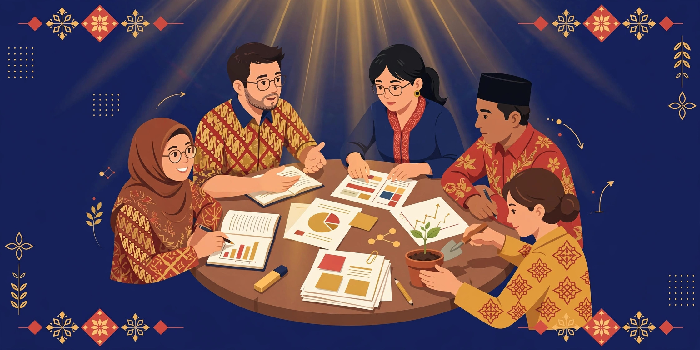

13 Oktober 2026
AI dan Literasi Digital dalam Pendidikan
PGRI Kabupaten Lampung Tengah • Hotel BBC Bandarjaya
Praktik pemanfaatan AI untuk menunjang tugas pokok guru.
Kumpulan slide presentasi Gunanto (Guru Matematika — SMPN 1 Punggur) dalam berbagai kegiatan sebagai narasumber / pemateri. Klik kartu untuk membuka slide.
PGRI Kabupaten Lampung Tengah • Hotel BBC Bandarjaya
Praktik pemanfaatan AI untuk menunjang tugas pokok guru.

Pelatihan Pembelajaran Mendalam bagi Guru • Daring
Penguatan inkuiri kolaboratif dan pola pikir bertumbuh (2 × 45 menit).
Jadwal tahapan implementasi, 7 poin pemanfaatan Papan Interaktif Digital, dan 10 poin perencanaan & asesmen — 20 slide.
Buka Slide →Webinar FKN (Forum Komunikasi MGMP Matematika SMP) • Google Meet
Membuat pembelajaran lebih personal, kreatif, dan efektif: Agent Muse, GitHub, GitHub Pages.